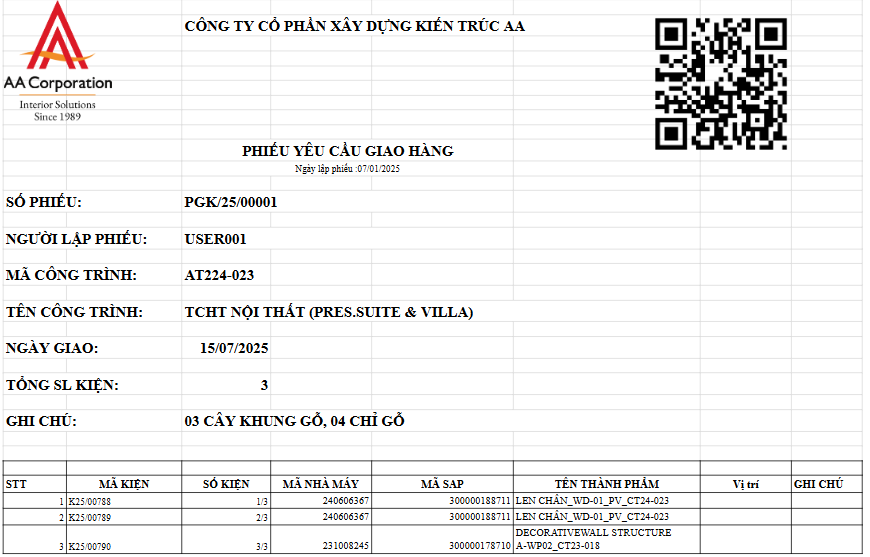
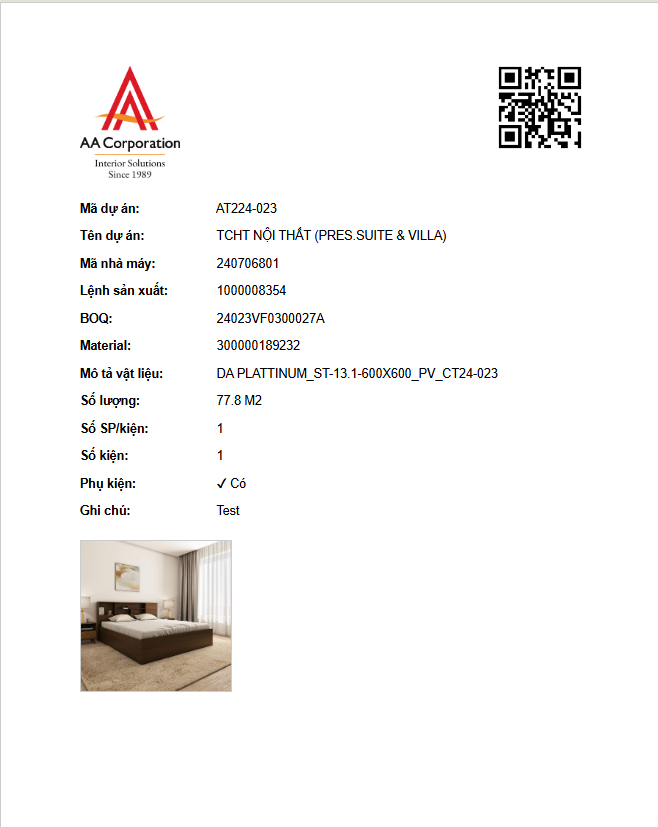
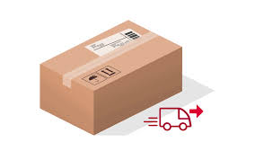

Hướng dẫn quét QR bằng ứng dụng PFC
Bước 1: Mở ứng dụng AAlibs
Khởi động ứng dụng AAlibs trên thiết bị của bạn.
Bước 2: Quét QR Phiếu Giao Hàng
Dùng camera quét mã QR trên phiếu giao hàng. Ứng dụng sẽ tải về danh sách kiện tương ứng.

Bước 3: Quét QR từng kiện
Tiếp tục quét QR của từng kiện để ghi nhận chi tiết.

Bước 4: Kiểm tra thông tin kiện tự động
Hệ thống tự động đối chiếu dữ liệu hiển thị trong ứng dụng với thực tế để đảm bảo chính xác.
Bước 5: Xác nhận kiện
Nếu thông tin đúng, hệ thống sẽ tự động xác nhận kiện.
Bước 6: Chụp hình kiện thực tế
Sau khi xác nhận kiện, bạn có thể sử dụng tính năng chụp hình để ghi lại hình ảnh thực tế của kiện tại hiện trường.
